The goal of this project is to make a panorama manually from multiple images captured from the same center of projection.
This involves building an image mosaic by registering, projective warping, resampling, and compositing.
Starting by shooting my own photographs, I first recover the homography between images and warped them accordingly
onto a common projection plane. As a byproduct of this step, the homography matrix also enabled me to rectify any known
rectangular objects. Finally, the warped images were blended on the shared projection plane to produce the final mosaic.
Disclaimer: I downsized all the images to make the selection of correspondence points easier. This causes some of the images
to be blurry, but it doesn't affect the warping and mosaicing process!
Part 1: Shoot and Digitize Pictures
I shoot multiple photographs such that the transformation between them are projective. This is achieved by fixing the center
of projection(camera) and rotate my body while capturing photos. In particular, I used zoomed out setting(x0.5) on the first example, hoping it will make
the mosaic more interesting. Additionally, the photos are shoot close in time to avoid changes in lighting, and the fields of view
are significantly overlapped to make the registration easier.
Part 2: Recover Homographies
Homography is a projective transformation such that from a single point (x, y) to (x', y'):
\[
\begin{bmatrix}
a & b & c \\
d & e & f \\
g & h & 1
\end{bmatrix}
\begin{bmatrix}
x \\
y \\
1
\end{bmatrix}
=
\begin{bmatrix}
wx' \\
wy' \\
w
\end{bmatrix}
\]
If we expand the matrix multiplication into systems of equation, this can be simplified to the following matrix operation:
\[
\begin{bmatrix}
x & y & 1 & 0 & 0 & 0 & -xx' & -yx' \\
0 & 0 & 0 & x & y & 1 & -xy' & -yy'
\end{bmatrix}
\begin{bmatrix}
a \\
b \\
c \\
d \\
e \\
f \\
g \\
h
\end{bmatrix}
=
\begin{bmatrix}
x' \\
y'
\end{bmatrix}
\]
Given n correspondence points, it give us 2n many equations and 8 unknowns. This is an overconstrained system and can be solved
with least squares. I choose the naive solution 'np.linalg.lstsq()' to find the parameters and the result is quite reasonable
(given the output of my warped images).
Part 3. Warp the Images
Given the homography matrix H, I used the inverse warping to avoid random holes in the warped image. First, I apply forward warping
homography to the four corners to obtain the boundary of the warped image. With 'skimage.draw.polygon', it gives
me all the pixels that lies within the boundary. Then I apply inverse warping homography which maps all the points back to the
source image. To avoid potential aliasing in the resampling process, 'scipy.interpolate.griddata' is used to
obtain the corresponding RGB channels. In between the processes, I apply translation to keep all points positive and make sure
that the function runs smoothly
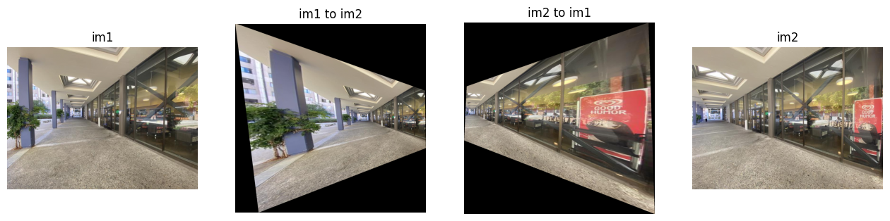
Part 4. Image Rectification
In this section, I take a photo that contains a rubik's cube and a photo that contains a laptop. Both photos contain
a known rectangular objects, and my goal is to make them rectangular using a homography. The distinction compare
to the previous section is that I only have one image to work with this time, and the correspondence points can not
be draw so easily. The trick turns out to be pretty simple, I define the correspondences using what I know about the
rectangular object. For instance, if I want to rectify the rubik's cube, then I know a priori that it is a square,
I can arbitrarily define the correspondence to [0, 0], [0, 200], [200, 0], [200, 200]
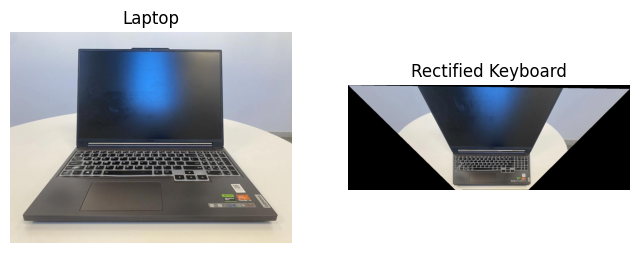
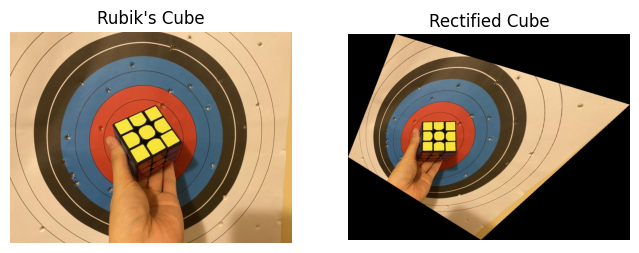
Part 5. Blend the images into a mosaic
With all the preparations complete, I can now align the images and blend them into a mosaic. The figure below showcases
one set of source images alongside their corresponding warped forms.
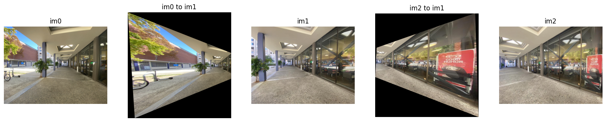
The first problem is alignment. Since the warped image is a translation of the source image, I manage to find the shifts
in both x and y direction and pad them to my images appropriately. Next, I find the area of intersection and apply
simple alpha average by setting alpha = 0.5. From the output mosaics, everything seems to be fine except on the edges of
intersection. This naive blending yields the result below. Note that the border artifact between im0 and im1 is much more
obstrude. This is because im1 and im2 are taking under a similar lighting setting, and im0 are taken facing the sunlight.
I would imagine that my phone camera automatically adjust some settings such as exposure that cause those differences.
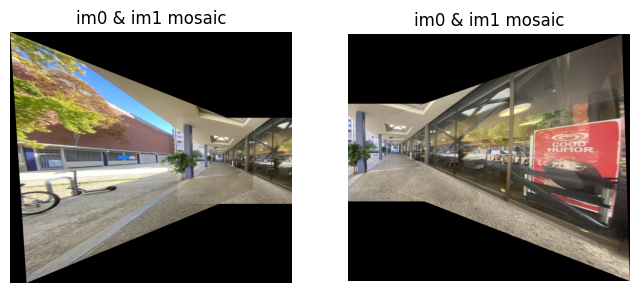
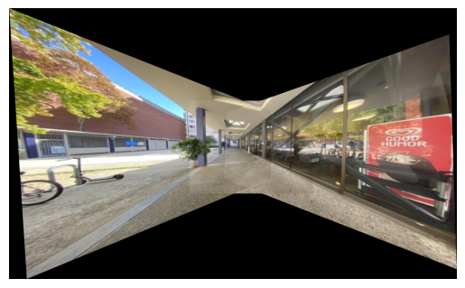
To mitigate edges, I applied a gradient mask that adjusts values based on the distance transform.
With 'scipy.ndimage.distance_transform_edt', I was able to get the distance of each pixel to the border automatically.
Then I normalized the intersection mask such that the highest value is set to one and use it as an alpha mask for my
blending process. The result is quite amazing as shown below. I should also mention that the result is not perfect, likely due
to numerical imprecision and integer rounding in my alignment stage. Also, the image is rather small in the middle because
I took the photos with 0.5x zoom.
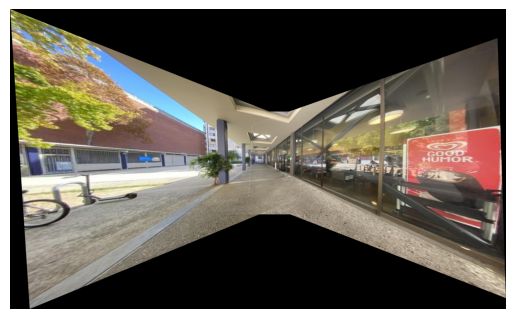
The figures below showcase two other examples of image mosaic :)
One attempt uses photos taken within a video game, ignoring user interface at the bottom, I think the screenshots blend pretty well!
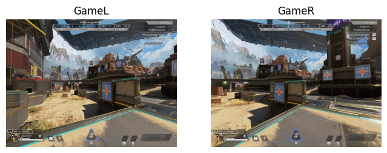
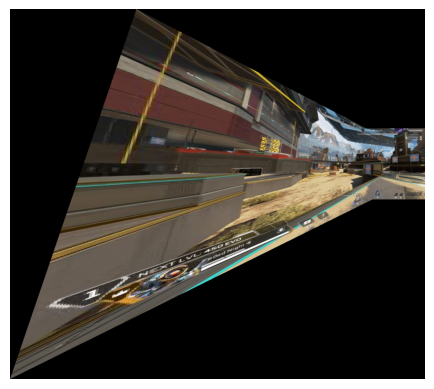
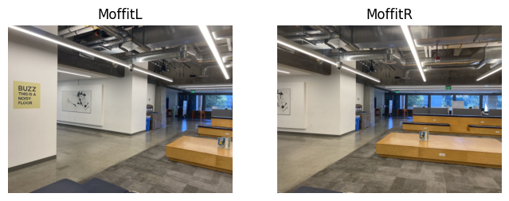
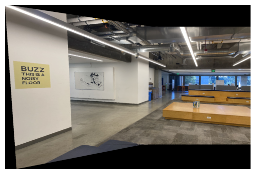
Bells and Whistles: Fake Projection
I took a step further and attempt to project an among us figure onto the Berkeley tower!
Procedurally, it is very similar to rectification but warped to a different perspective.
The additional steps are the creation of a mask based on the white background and alignment to the tower.
I performed a simple addition at the end, and the result gives the impression that the figure is being
projected onto the tower just like an actual projector would!